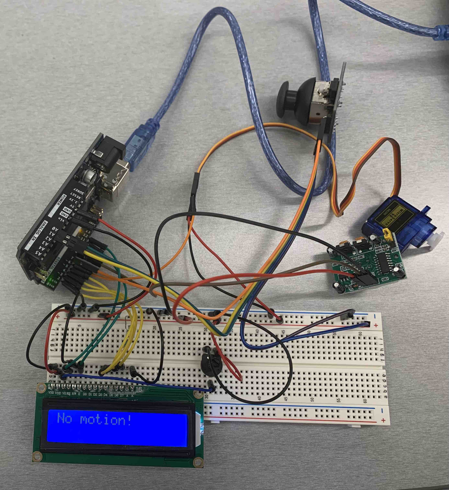

This is my schematic for the Libraries assignment.

This is my circuit for the Libraries assignment.
// Cheng Guo
// HCDE 439 - HW 4
// Reference 1: https://docs.arduino.cc/learn/electronics/lcd-displays
// Reference 2: https://arduinogetstarted.com/tutorials/arduino-motion-sensor
#include <Servo.h> // include the servo code
#include <LiquidCrystal.h> // include the LED code
// initialize servo, LCD, Motion Sensor, Joystick
Servo hw4Servo; /// initialize a servo for HW 4
int servo = 6; // set the servo on pin 6
int xJoystick = A0; // set the x-axis input on pin A0
int yJoystick = A1; // set the y-axis input on pin A1
// initialize the library by associating any needed LCD interface pin
int rs = 12, en = 11, d4 = 5, d5 = 4, d6 = 3, d7 = 2;
// with the arduino pin number it is connected to
LiquidCrystal lcd(rs, en, d4, d5, d6, d7);
int sensor_pin = 8; // the pin that OUTPUT pin of sensor is connected to
int state = LOW; // current state of the sensor
// the setup routine runs once when you press reset:
void setup() {
// initialize serial communication at 9600 bits per second:
Serial.begin(9600);
// initialize digital pins as input and outputs.
hw4Servo.attach(servo); // attach the servo on pin 6
pinMode(sensor_pin, INPUT); // set arduino pin to input mode to read value
lcd.begin(16, 2); // set up the LCD's number of columns and rows
}
// the loop routine runs over and over again forever:
void loop() {
// put your main code here, to run repeatedly:
// record input from the joystick
int xValue = analogRead(xJoystick); // record input from x-axis
int yValue = analogRead(yJoystick); // record input from y-axis
// change the motor with the input value
int xMapped = map(xValue, 0, 1023, 0, 90); // map the x-axis input to 0-90
int yMapped = map(yValue, 0, 1023, 0, 90); // map the y-axis input to 0-90
int total = xMapped + yMapped; // set the sum of mapped inputs to be the value for output
hw4Servo.write(total); // turn the servo to the output position
int value = digitalRead(sensor_pin); // read new state
Serial.println(value); // print the new state to the serial monitor
if (value == HIGH && state == LOW) { // check if there is motion
lcd.clear(); // clean the LCD for display
lcd.setCursor(0, 0); // set the cursor to (0,0)
Serial.println("There is motion!"); // print the state to the serial monitor
lcd.print("There is motion!"); // print the state on the LCD
state = HIGH; // update variable state to HIGH
}
else if (value == LOW && state == HIGH) { // check if the motion stopped
lcd.clear(); // clean the LCD for display
lcd.setCursor(0, 0); // set the cursor to (0,0)
Serial.println("No motion!"); // print the state to the serial monitor
lcd.print("No motion!"); // print the state on the LCD
state = LOW; // update variable state to LOW
}
}
This is my code for the Libraries assignment. When I move the joystick, the servo moves. When the servo moves, the motion sensor catches the motion, and the LCD shows "There is motion!" Otherwise the LCD shows "No motion!"
This is my circuit's operation for the Libraries assignment.
Based on the information from my reference 1: https://docs.arduino.cc/learn/electronics/lcd-displays, I chose a 220Ω resistor for the LCD.